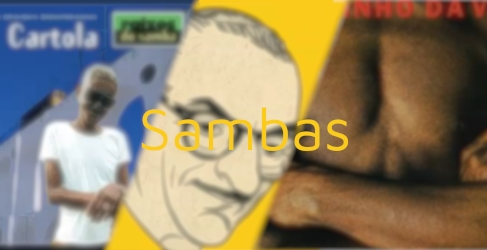

Samba Nostalgia
“Para se fazer um samba com beleza é preciso um bocado de tristeza.” (Vinicius de Moraes).
O samba não é apenas uma canção que diverte e nos faz dançar, o samba também desperta sentimentos que nos leva a chorar, afinal samba e saudade andam lado a lado desde sua criação, é a canção trazida por um povo que perdeu sua nação, e tem sofrido desde então.
Te convido a ver um pouco desse lindo legado, que hoje nos traz muita alegria, mas por vezes também uma forte nostalgia.
